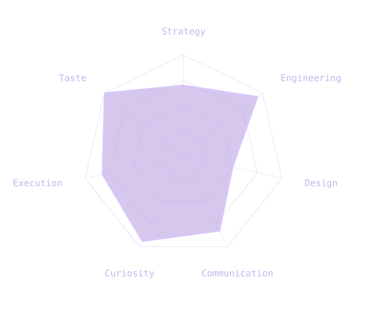

<!doctype html><html lang="en"><meta charset="utf-8"><meta name="viewport" content="width=device-width,initial-scale=1"><title>Strengths graph draft</title><style>*{box-sizing:border-box}body{margin:0;background:#000;color:#c5b5ec;font:13px/1.6 Menlo,Consolas,monospace;min-height:100svh;display:grid;place-items:center}main{width:min(100%,520px);padding:28px 12px}h1{font-size:17px;font-weight:400;margin:0 20px}figure{margin:8px 0 0}img{display:block;width:100%;height:auto}a{color:#c5b5ec;text-underline-offset:4px}footer{margin:0 20px;color:#9688b0;font-size:12px}a:focus-visible{outline:2px dashed #c5b5ec;outline-offset:5px}</style><main><h1>What I bring</h1><figure></figure><footer><a href="strengths.svg" download>Download graph</a></footer></main></html>